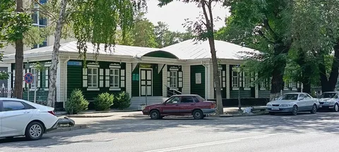
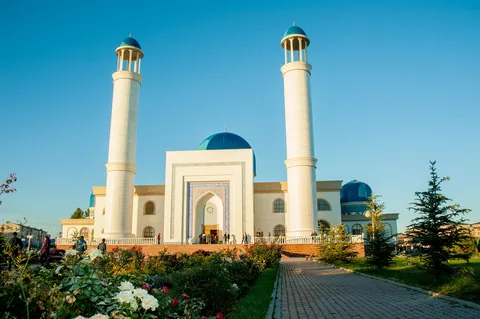
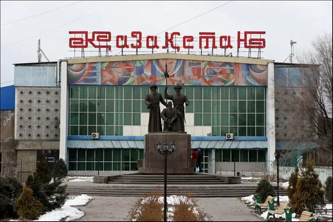
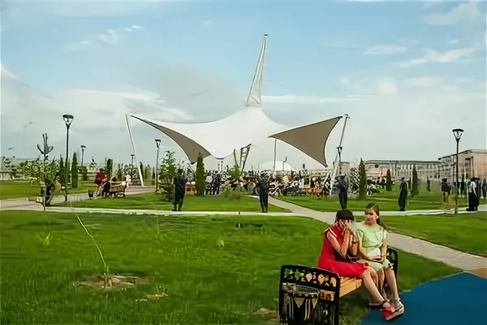

Талдыкорган
Талдыкорган — административный центр Алматинской области, расположенный на юге Казахстана. Город сочетает современную архитектуру и исторические здания, а также является важным экономическим и культурным центром региона. Здесь проходят фестивали, спортивные мероприятия и культурные события, которые привлекают гостей со всей страны.
История
Талдыкорган известен с начала XX века как важный административный и торговый центр региона. Город развивался как транспортный узел и культурный центр, сохранив традиции казахского народа и архитектурные памятники.
Достопримечательности
-

Дом‑музей Ильяса Жансугурова — литературный музей, посвящённый поэту Ильясу Жансугурову.
-

Центральная мечеть Талдыкоргана — главный мусульманский храм города.
-

Монумент «Уш ата» — скульптурная композиция в честь трёх исторических личностей.
-

Набережная реки Каратал — современная прогулочная зона вдоль реки.
-

Драматический театр имени Бикен Римовой — культурная площадка с историей.
-

Салтанат сарайы — архитектурно выразительное здание для торжественных мероприятий.
Культура
Талдыкорган активно развивает культурную жизнь: здесь проходят театральные постановки, выставки, концерты и фестивали. Город объединяет современные здания и исторические памятники, сохраняя уникальный колорит региона.
Интересные факты
- Город считается центром Алматинской области.
- Набережная Каратал — любимое место отдыха жителей.
- Талдыкорган активно развивается в экономическом и культурном плане.